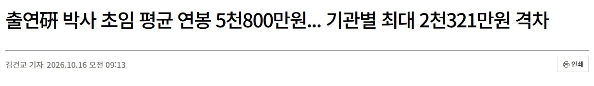
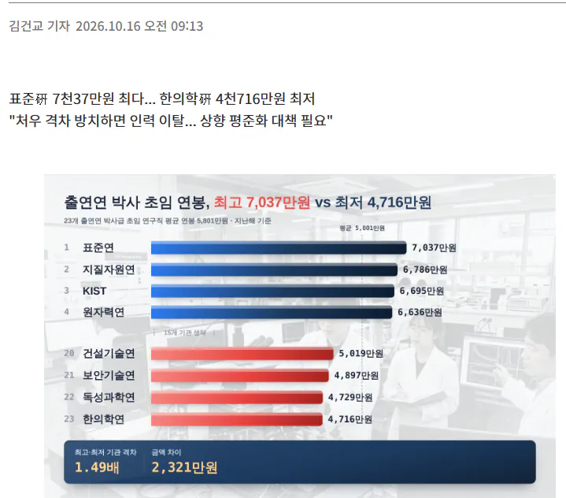

박사들한테 저정도 월급이 맞나...?


박사들한테 저정도 월급이 맞나...?
최근 몇년간 급격하게 사기업하고 격차가 심해진거지
당장 5년전만해도 정출연은 신이였음
내가 한 20년째 일하고 있는데 신이었던 기억은 없는데??
엥? 정출연 인기 많았는데?
그게 대우가 좋고 연봉이 높아서 인기가 많았다는건 아니었을텐데?
한때 공무원 안정적이었다고 인기 있었다고 공무원을 신이라고 부르진 않았잖음??
같은거..
IMF 터지고 다 작살나니까 그나마 정출연 밖에 길이 없었으니까 학위있는 사람들이 몰려서 인기가 많은것처럼 보인거지
무슨 연봉이 높고 그래서 인기가 많았던 줄 암?? ㅎㅎㅎ
지옥같은 상황에 그나마 동앗줄이었던 것 뿐임. 신은 무슨.. ㅋㅋㅋ
내가 연봉으로 인기가 많았다고 한적도 없는데 왜 그럼?
사기업이 연봉이 항상 우세했는데 당시에는 그래도 큰 격차는 없었고 그걸 메꿀만한 워라벨이나 철밥통이 있어서 신이었다는거지
누가 연봉 많이 줘서 그랬다고 했음?
그리고 20년 일했다는거보니 연배가 있는거 같은데
우리때는 다 정출연 가고싶다 외치고 있었어요
아... 워라벨, 철밥통 노리고 정출연 온다고들 했던거 였구나.
그래서 3년 못버티고 다들 그만뒀던 거구나.
원래
취준할 땐 신
취뽀하면 ㅂ신 되는 건 공통 아님? ㅋㅋ
뭘 계속 꼬아들어 ㅋㅋㅋ
본인도 ㅈ같으면 버티지말고 나가든가 ㅋㅋ
말귀 존나게 몰아듣네 병신인가 ㅋㅋ
언제나 직업의 처우는 상대적인거지 ㅋㅋㅋㅋ
같은 50점이라도 평균점수가 70점이면 저등급이지만 평균점수가 20점이면 50점은 신이야 ㅋㅋㅋ
그런거였음...?
화이팅...
나도 이렇게알고있었는데, 일도 개꿀이고
2010년 중반에 신의직장 소리 들었음
친구는 정출원 정규직 티오 너무 안 나와서 걍 방산업체로 이직하던데..
워라벨 생각하면 절대 적다고는 생각 안되는데 ㅋㅋ 돈벌거였으면 애초에 정출연을 안가는데, 기사가 잘못됐네. 오히려 지금 연구 트랜드 자체도 기업이 주도하게 되는등 메인스트림 자체가 기업이 되니깐 인기있는 곳으로 몰리는거지. 예전에야 들어가는 난이도가 교수 > 정출연 >>> 사기업 정도라면, 지금은 교수 > 사기업 (삼하) >정출연 정도로 역전 및 평준화되었으니깐
저게 맞는거임
정출은 공부하면서 돈받는거라 생각해라
기업들은 경력직을 선호함.
정출연은 갓 졸업한 졸업 신입도 채용함.
졸업하고 첫 직장으로 저 초봉을 받고 일하는 거고, 그러다가 일이 맞냐에 따라서 거기 계속 눌러앉거나 아니면 정출연에서 일한 경력을 가지고 기업으로 이직하거나 하는 식이더라.
정출연 연구직이 어떻게든 다른 곳으로 이직하거나 재직하면서 부업 소득에 눈 돌아가게 만드는 건 좀 바꿀 필요가 있음
그리고 윗댓 중에서도 상위기관을 포함한 행정직이 연구관리를 빙자해서 영향력 미치는 건 손봐야된다 생각은 함
근데 그걸 해소하지는 못하는게 연구직이 진짜 예산관리나 집행할때 자기 맘대로 ㅈ같이 쓰고 리베이트 받고 하는 경우가 원체 많다보니.. 나중에는 중앙부처에서 전체 정출연 예산관리 관리하는 시스템으로 결국에는 바뀔거라 생각함. 각 정출연마다 행정 등 지원조직이 비대하거든; 인건비 부분은 이쪽이 더 누수라고 생각함
ㅇㅇ 이번에 통폐합하더라
정출연에서 석박하다가 사기업으로 런 했는데 초봉은 정출연 박사급이랑 삼현슼 대기업 학사랑 비슷하긴함
근데 정출연은 전공살릴 수 있고 워라밸도 나쁘지않아 장점도 있어 보이더라
난 기초과학 전공해서 전공살리려면 정출연아니면 해외나가야하는 전공이라 더 그렇게 느꼈을 수도 다른 분야면 모르겠다
뭐 제대로 안해본 사람들이 말하넹..
정출연은 연구인력 관련으로는 총액인건비제도 좀 풀어줘도 되지 않을까?
세상 트렌드가 빨리 변하는구나....
한 5년전까지만 해도 애매한 대학 교수하느니 정출연 가는 걸 더 선호한다는 얘기까지 나왔는데
ㄹㅇ 워라벨에 철밥통이라 정출연 인기 많았는데
일단 정출연 갈 수 있으면 정출연 가서 연구하다가
좋은 대학 갈 수 있으면 교수하고
아니면 정출연 철밥통+워라벨 짱짱하니 은퇴까지 있다가
은퇴후에는 과학기술인 연금으로 노후 보내고....그랬는데...
???그럼하지마이쒸!
능력있고 눈치빠른 박사들은 정출연 안간지 한참됐지
의사해야지.. 무슨 과학공학 박사여
정출연도 얼마전까지 공공기관으로 묶여있을때 블라인드 채용하면서 설카포 박사나 지잡대 박사나 똑같이 평가받는 ㅂㅅ짓 하다가 최근에야 풀림
그리고 이제 2030년까지 PBS 완전 폐지라 그나마 기관마다 약간 있던 연구 자율성도 이제 문과 출신 과기부 공무원 나리들이 시키는 방향으로 안하면 각종 인센티브며 제약거리만 ㅈㄴ 늘어날 예정
9급 공무원들도 돈벌어보겠다고 근무시간에 주식사고파는데 정출연이라고 뭐 있나.
다 대우받는만큼 일하는거
박사도 성과가있어야 대우해주지
수당에 성과급 포함 안된거잖아?
한국은 이재 인력 넘쳐서 꼬우면 나가가 맞음 ㅋㅋ
보통 뭔 사업 관련해서 박사급 4800정도면 정부기관 초임치고는 상당히 많이 주는거라 생각할걸
이게 대충 15년 전 기준이라는게 문제지만
국내기준 SKP학사졸 SKP석박 아니면 물박사다
ㅇㅈ
ky 학졸 sk 석박이면?
정출연 뿐만 아니라 모든 공공기관이 겪는 문제이긴 함.
예전엔 고용 안정적성이나 다른 메리트가 임금 격차를 상쇄시켜줬는데,
코로나 이후로 민간하고 격차가 크게 벌어지면서 하는 일은 같은데 급여가 1.5배 이상 차이나기 시작하면서,
능력있는 사람들이 가던 공공기관(정출연, 금융공기업 등)에서 탈주 러쉬가 이어지고 새로 수급되는 인력들의 질도 떨어지고 있음.
분명히 우리나라 공공행정 질이 갈수록 떨어지는게 현장에선 느껴지는데, 아직 대다수 국민들은 체감하기 힘들고 여타 외국보다 낫다며 국뽕에 눈깔 뒤집고 있는데,
갈수록 점점 개판나는거 얼마 안남았음. 공조직의 비위나 업무 찐빠내는 뉴스가 괜히 늘고 있는게 아님.
같은 일도 아님 ㅋㅋ
기존 것 그대로 다하고 추가로 늘어나는데
당연히 각각에 대해 신경 쓰는 건 줄을 수밖에 없고 깊은 이해는 어림도 없음
규제 따라 업무도 늘어나기만 하는데 사연 없는 규제는 없음
규제 철폐? 그래서 문제 생기면 누구 목매달면 되는지 따지면 싹 다 침묵 ㅋㅋ
문제 생기면 누군가 목매달아야하는 건 대한민국에서 당연한 상식이니 반박 안받음
맞음
결국 핵심은 재발방지보다는 책임자 목매달기에 환장한 국민과 조직 성향 때문임
그런 풍토에서 제일 키맨인 연관자들이 진짜 현장상황을 토로하기 보다는, 걍 면피에만 급급할수 밖에 없고
진짜 고충은 공론화 되기 힘든 익명 커뮤에서나 징징글로밖에 쓸수 없음
어차피 저래도 자리 없어서 못 들어감
걱정하지마라ㅋㅋ50대 되면 연봉 1억 62세까지 계속 늘어난다 걱정할급이 아님
초임이야
초임 높이면 30년데리고있어야되는데 어쩌려고
10년전 카카오 박사초임이 6천이였는데
요즘 채용 서류심사 간 애한테 들어보니 엉망이더라. 우리 회사가 존나 만만한가? 싶은 애들도 쓴다고. 메인은 아니더라도 그래도 정규직 연구직인데 spk/연고/서성한 학부 출신 지원이 전멸. 인서울 중하위 또는 국립대 학부에 야간 대학원 세탁 투성이임
뭐 박사면 다 대우해줘야함? 생각이 이상하네
박사vs의사